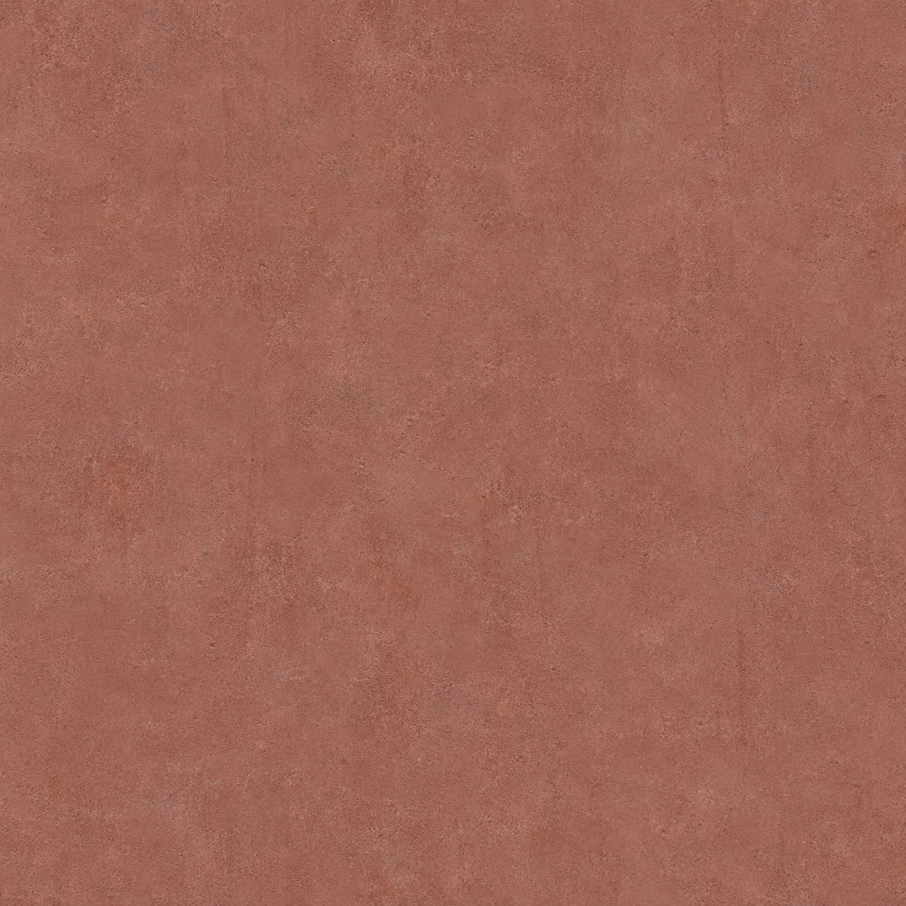
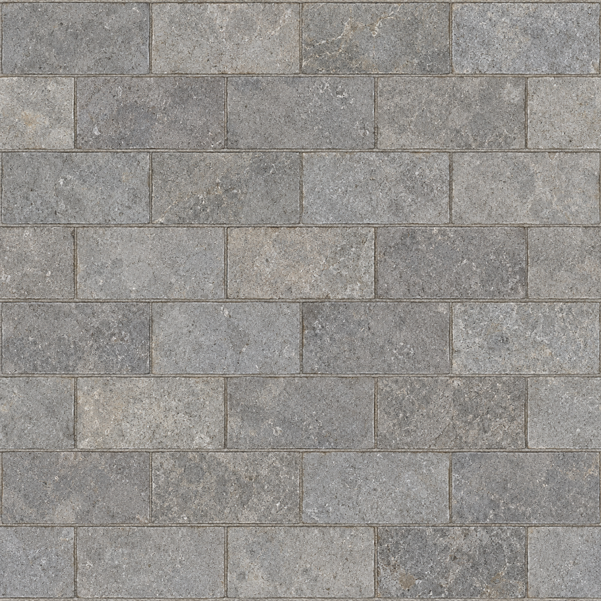
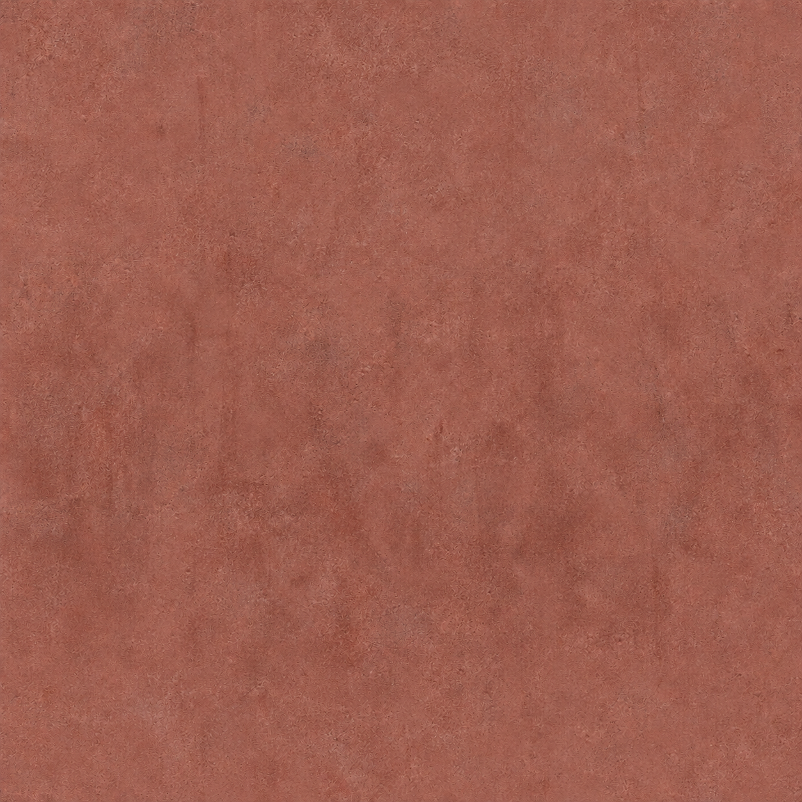
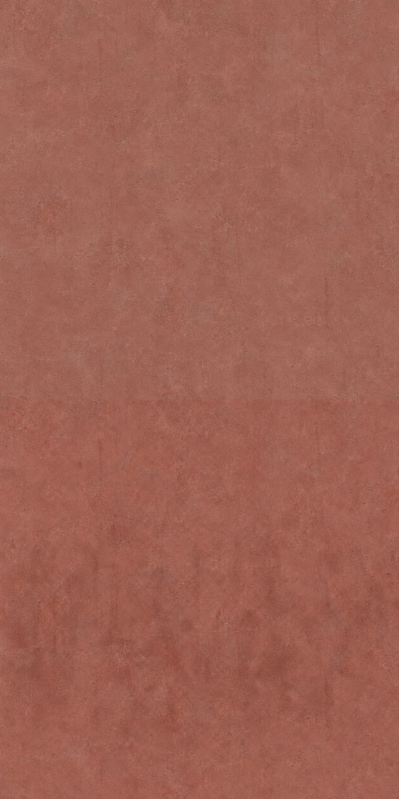
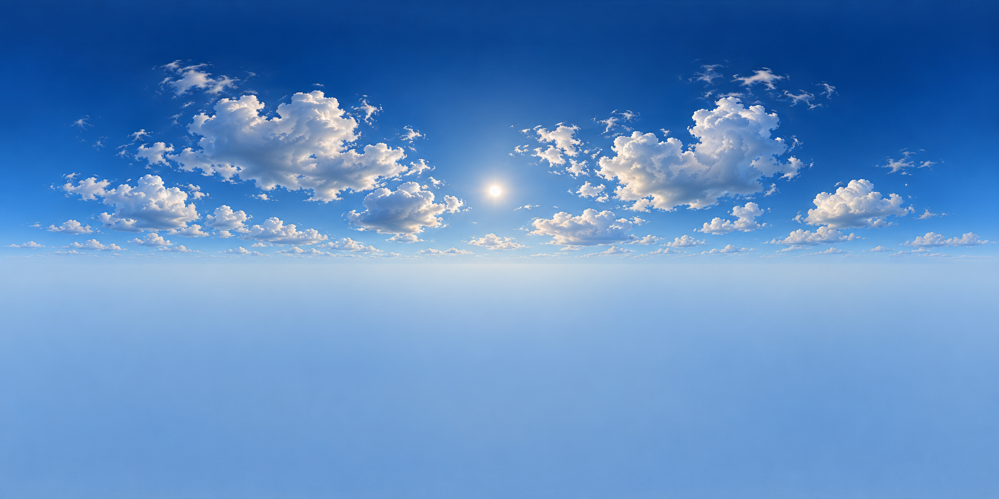
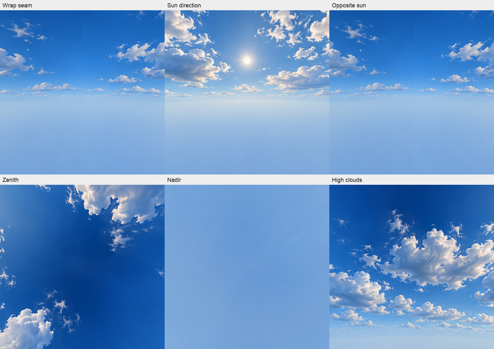
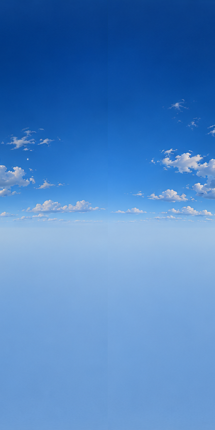
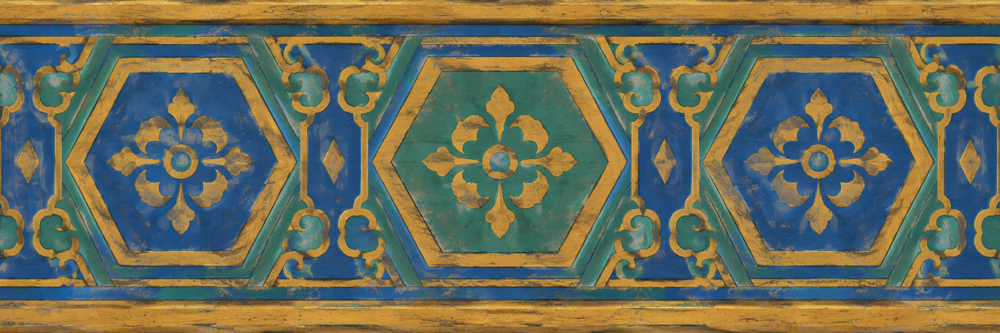

Kaksi tekstuuria läpäisi tuottajan visuaalisen tarkistuksen. Kolmessa on edelleen alla nimetyt puutteet. PT:n hyväksyntä on avoin.
Koko raportti · Kaikki kahdeksan generointiohjetta · Koot ja tiivisteet
Tuottajan visuaalinen tarkistus läpäisty — PT:n arvio avoin
Hillitty haalistunut lämmin punainen, hieno laikutus ja heikot pystyvalumat. 2 × 2 -toistossa ei selvää katkoviivaa tai voimakasta suunnattua valaistusta.
Avaa alkuperäinen 1254 × 1254 · Avaa kokovienti 2048 × 2048

Tuottajan visuaalinen tarkistus läpäisty — PT:n arvio avoin
Harmaat sävyltään vaihtelevat kivirivit, kapeat saumat ja noin 2:1 kivisuhde. Neljä kivijaksoa leveyteen ja kahdeksan riviä; 2,8 × 2,8 m UV-ala vastaa noin 70 × 35 cm kiviä. Pelin mittakaavaa ei ole testattu.
Avaa alkuperäinen 1254 × 1254 · Avaa kokovienti 2048 × 2048

Ei läpäissyt — vain arvioehdokas
Alempi punainen pinta on tummempi ja kuluneempi, yksittäisen tekstuurin oma toisto on käyttökelpoinen arvioitavaksi.
Avaa alkuperäinen 1254 × 1254 · Avaa kokovienti 2048 × 2048

Koko toisto JPEG-tarkistuskuvana
Yläpuolella pääpinta, alapuolella kulunut rappaus. Saumaa ei ole häivytetty.

Ei läpäissyt — vain arvioehdokas
Sininen taivas ja kumpupilvien alapinnat sävyttyvät. Maata tai siluetteja ei näy alapuoliskolla. Kokonainen 2:1 equirectangular-kuva, ei kuuden kuvan kuutio.
Avaa alkuperäinen 1774 × 887 · Avaa kokovienti 4096 × 2048



Ei läpäissyt — vain arvioehdokas
Sininen ja vihreä perinteinen kuusikulmainen ornamentti kultareunuksin; visuaalinen aihe on oikea.
Avaa alkuperäinen 2172 × 724 · Avaa kokovienti 2048 × 512

Viisi alkuperäistä ehdokasta ja niiden tekniset kokoviennit. Ei R2-siirtoa tai varmennettua peli-integraatiota.